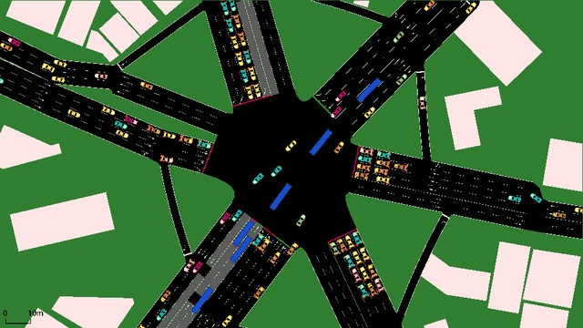
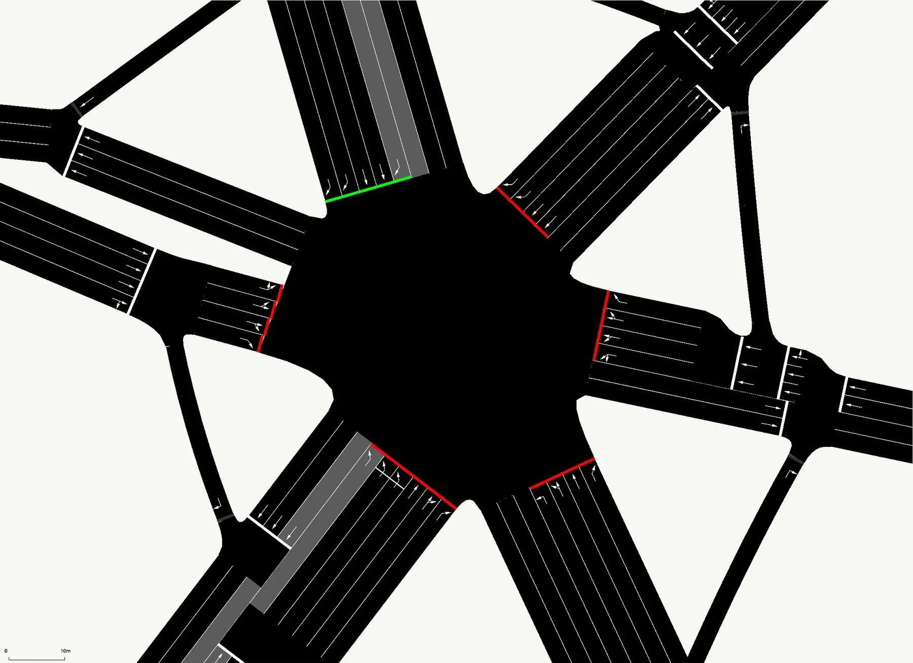
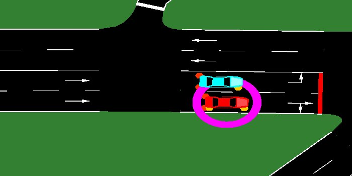
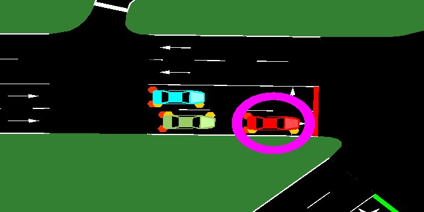

Driving video
Jump to a scene
The final model (RL4) drives the full 6.7 km test loop in SUMO; 23 minutes of driving shown in 56 seconds. Click a scene to jump to it.
Overview
We rebuilt Busan's Yeonsan junction in the SUMO traffic simulator and trained an autonomous vehicle (AV) to drive through it. Six roads meet here, so the AV has to pick the lane for its exit early, then merge, yield and change lanes among background traffic matched to real counts.
The AV first imitated an expert driver (behavior cloning, then DAgger) and was then fine-tuned with reinforcement learning (PPO). In 960 evaluation runs the final policy reached its destination 99.38% of the time with a 0.42% collision rate. We release 10,647,162 transitions on Hugging Face.
Framework
Build the junction

SUMO environment6.7 km test loopTrain the AV
1 Imitation learning · BC → DAgger
2 Reinforcement learning (PPO) in SUMO · every 0.5 s
Plus an imitation (BC) loss, weighted 1.0 → 0.2
Evaluate and release
- Our AV
- Background traffic
- Expert driver (SUMO)
- Learned policy (neural network)
Figure: how the project fits together. Each panel is explained in the sections below.
Rebuilding the real junction, lane by lane

- Imported the six approaches from OpenStreetMap with SUMO's netconvert tool.
- Checked all 34 lanes against street view and Korea's national road network data (node-link), fixing lane directions, BRT bus-only lanes and right-turn slip roads.
- The real signal plan is not public, so we designed one: 6 phases in a 120 s cycle (3 s yellow, 2 s all-red) that group non-conflicting movements.
SUMO, TraCI and libsumo are pinned to 1.27.1 (requirements.txt).
Driving among realistic traffic
Junction demand follows Busan's 2025 traffic survey (hourly, by vehicle class) for all 25 movements. Background flows were added on the rest of the AV's test loop.
Junction demand
4,303 cars + 204 buses per hour from the 2025 Busan survey, all 25 movements. Motorcycles (part of the 5,015 survey total) are not simulated.
Loop background flows
2,000 veh/h measured on Yeonsu-ro, 2,550 veh/h assumed on the rest of the loop.
Gridlock check
When a car is stuck too long, SUMO removes it and puts it back further on (a "teleport"). Background teleports before → after the fixes, three 1-hour runs at full demand.
Car-following models
Each background vehicle gets one SUMO car-following model, so drivers brake and accelerate differently.
Driver and vehicle mix
- 12% aggressive drivers
- 10% cautious drivers
- Taxis that stop for pick-ups
- Short stops by the roadside
Used in the released data; evaluation also includes runs without them.
-
World Cup-daero
Looks for a safe gap in the next lane before moving over to turn right.
-
Yeonsu-ro merge
Slows on the unsignalized ramp and yields to main-road traffic.
-
Yeonsan junction
Waits for green and moves off with the cars in front.
vehicles within 150 m of the AV
inside its observation range (±100 m)
Averages over a 300,000-row sample of the dataset (seed 15).
Observation, action and reward
Every 0.5 s the AV reads a 56-dimensional observation and outputs two actions: acceleration and lane change. The bar splits the 56 values by what they describe.
ActionTwo outputs every 0.5 s
Acceleration
Policy output a ∈ [−1, 1], mapped to −5 … +3 m/s².
Lane change
One of three choices each step: {left, keep, right}.
Not in the observationHidden from the AV on purpose
- Lane-level route guidance (which lane to take)
- Remaining green or red time
- Conflicting vehicles inside the junction
Left out on purpose, so the policy has to choose its lane and judge the signal on its own.
RewardSmall signals every step, large ones when the episode ends
Every step
- +Route progress
+0.1 × Δd / (v_max · Δt)Distance gained along the route - −Overspeed
−0.5 × (v − v_lim) / v_limAbove the lane speed limit - −Time to collision
−0.3 × (1 − TTC / 3 s)Closing in on a car, TTC < 3 s - −Short gap
−0.1Gap < 6 m at ≥ 3 m/s - −Blocked by a slow leader
−0.05Leader < 20 m, not waiting at a light - −Target lane
−0.05 × (1 − d_lane / 300 m)Lane does not continue on the route - −Stopping far back
−0.1 × min(1, extra gap / 8 m)Stopped over 4.0 m behind a car or 1.5 m short of the stop line. Added for RL4
When the episode ends
All four end the episode. The +2 for arriving is small because route progress already pays about +96 over the loop.
Training: imitation first, then PPO
PPO with reward alone did not learn to change lanes before diverges. So we started with imitation learning from an expert (BC, then DAgger) and fine-tuned with PPO. The last two steps fixed the environment and then where the car stops.
-
Step 1
PPO, reward only
7 junction routes · 280 runs68%arrival4.3% collision -
Step 2
Behavior cloning (BC) from a corrected expert
7 junction routes · 0.5× demand · 560 runs85.0%arrival4.1% collision -
Step 3
DAgger, 8-model ensemble
7 junction routes · 0.85× demand · 840 runs97.0%arrival0.60% collision -
Step 4
Single-policy PPO + BC loss (sr1)
6.7 km loop · 1.0× demand · 480 runs *92.71%arrival4.38% collision -
Step 5
RL2: retrained after the speed-limit clip was removed
6.7 km loop + added traffic · 4 conditions · 960 runs98.75%arrival0.21% collision -
Final
RL4: stopping distance fixed, retrained
Same evaluation · 4 conditions · 960 runs99.38%arrival0.42% collision
Steps 1 to 3 were tested on seven short routes through the junction; from step 4 on, the car drives the full 6.7 km loop. Routes and demand differ between steps, so compare the numbers within a card, not across cards. * Re-measured after fixing a seed bug in the evaluation script that made runs repeat.
Results
Arrival rate
954 of 960 runs over 4 traffic conditions.
Collision rate
4 of 960 runs. The project requirement was under 5%.
Stopping distance
Medians. Gray is the previous model RL2, green is RL4. Details in Problems and fixes.
Final model RL4, deterministic policy, 240 runs in each of 4 traffic conditions (seeds 905 onward).
Dataset: 10,647,162 transitions
3,600 episodes driven by the RL2 policy (the model before the final stopping-distance fix), logged every 0.5 s. Each row pairs the AV's partial observation with the simulator's privileged state.
-
episode, tEpisode id (= seed), step -
observation56-dim partial observation -
actionRaw and applied acceleration and lane change -
reward, terminatedStep reward and termination flags -
stateEgo pose and speed, signal groups, vehicles within 150 m -
eventcollided, arrived, red_light, wrong_lane, teleported
9 shards of 400 episodes, each in three formats
.parquet6.92 GB, columnar, read only what you need.jsonl.gz9.66 GB, one transition per line.npz0.81 GB, arrays for offline RL and BC.meta.jsonCollection settings and code tables
import pandas as pd
url = "hf://datasets/hoseob0902/HexaCross-dataset/v2/loopB/loopB_RL2_s11.parquet"
df = pd.read_parquet(url)Run it yourself
git clone https://github.com/jimin326/HexaCross && cd HexaCross
pip install -r requirements.txt # includes SUMO and libsumo 1.27.1
# Evaluate the final model on the 6.7 km loop (loopB in the code): 240 runs per traffic condition
ROUTE_SET=loopB MAX_STEPS=6000 LANE_PLAN_RANGE=300 ROAD_DETAILS=driver_styles,taxi,short_stops \
python tools/rl/eval_parallel.py models/yeonsan_loopB_RL4/model.pt results/eval_RL4 --n 240 --workers 4 --chunk 15
# Collect transitions: seed 11, 400 runs (how the released dataset was made)
ROUTE_SET=loopB MAX_STEPS=6000 LANE_PLAN_RANGE=300 ROAD_DETAILS=driver_styles,taxi,short_stops \
python collect_pomdp_data.py --model models/yeonsan_loopB_RL2/model.pt \
--episodes 400 --workers 4 --seed 11 --name loopB_RL2_s11Windows commands and more options are in the README files on GitHub.
Problems and fixes
Open a row to see what happened, what we changed and how we checked.
Background vehicles queued in one lane and blocked the approaches
Demand-based green times, lane changes enabled, start-up acceleration 2.6 m/s²
Background teleports (three 1-hour runs at full demand)153→16
Junction throughput vs survey demand
Centre line = exactly the survey demand
Background teleports
Cars still waiting to enter at the end
Measured with check_demand.py at full demand, three 1-hour runs.
What happened
Background cars were not allowed to change lanes, so each queue formed in a single lane while the lane next to it stayed empty. Approaches backed up, new cars could not enter, and SUMO teleported cars that stayed stuck.
What we changed
Lane changes turned on for background cars. Start-up acceleration 1.8–2.0 → 2.6 m/s² and time headway 1.0–1.5 → 1.0–1.1 s so queues clear on green (assumed values). Krauss driver imperfection 0.3 → 0.2, minimum gap 2.5 → 2.0 m. Green times split by measured demand.
How we checked
check_demand.py at full demand, three 1-hour runs: junction throughput against the survey −28% → +3%, teleports 153 → 16, cars still waiting to enter at the end 1,625 → 281.
Source: env/road_config.py (background driver settings)
The first imitation model copied the expert exactly and crept into the car ahead
Relabeled expert speeds to leave 2 m of extra room behind the car ahead and 1 m before a red stop line
Arrival rate (35 runs, then 420 runs)3%→82%
What happened
SUMO's driver model stops exactly at its minimum gap (2.5 m). A student that aims for the same spot overshoots by a few tens of centimetres, and SUMO counts that as a collision. At red lights the expert's rule "if you cannot stop any more, keep going" also leaked into the labels.
What we changed
Teacher correction on the training labels: the target speed is capped at the safe speed that stops 2 m short of the minimum gap, and at a red light at the speed that stops 1 m before the stop line. Nothing changes while driving.
How we checked
Seven routes through the junction: 1 of 35 runs arrived before (3%), 345 of 420 after (82%). The two tests have different sample sizes. This was the largest single jump in the project.
Source: docs/experiments/README.md, models/yeonsan_7routes_BC/README.md
The imitated expert kept going on yellow, so the AV crossed the stop line just after red
Relabeled yellow-light actions: stop whenever the car can brake at ≤ 4 m/s²
Red-light violations (60 runs each)18.3%→0%
What happened
Violations grew as we added expert data. Replaying 30 of them showed one pattern: yellow comes on 35–50 m before the line at 50 km/h, the AV holds its speed for 1.5–2 s, then brakes late and crosses just after red. The cause was the expert: on yellow 30–70 m out, SUMO itself keeps going or speeds up.
What we changed
Every yellow-light training sample was relabeled with a physics rule: if the car can stop before the line at ≤ 4 m/s², brake to stop (required deceleration × 1.15); otherwise keep going. About 83% of ~31,000 yellow samples became stops. The rule needs no signal timing, which the AV cannot observe.
How we checked
Before the fix, a model fine-tuned with PPO for 200k steps had 18.3% violations in 60 runs. An 8-model ensemble retrained on the relabeled data had 0% violations and 100% arrival in 60 runs.
Source: loopB_log.md (training log), yellow-light analysis
33 of the previous model's 39 collisions were at the unsignalized Yeonsu-ro merge
Relabeled 6,356 expert actions: decelerate from 60 m out to 4 m/s at the merge entry
Collisions at the merge in 960 runs (sr1, then RL4)33→0
What happened
After main-road traffic was added on Yeonsu-ro (1,000 veh/h), the previous model sr1 crashed 39 times in 960 runs, 33 at one spot where a right-turn ramp joins Yeonsu-ro. The ramp must yield, but the AV entered at about 40 km/h. Cars on the other road are not in its observation (left out by design), and the SUMO expert, which can see them, slowed only slightly, so there was no braking to imitate.
What we changed
Approach samples were relabeled with an observation-only rule (relabel_turn.py): with no signal within 150 m and a turn of 27° or more within 60 m, the target never exceeds the speed that slows to 4 m/s at the entry at 2 m/s². 6,356 of 11,532 approach samples became braking.
How we checked
Same 960-run evaluation: 33 collisions at this merge for sr1 → 0 for the final model RL4. In the training condition alone (240 runs), all collisions fell from 8 for sr1 to 0 for RL2. The later models also include the speed fix, another DAgger round and PPO, so the drop is not from this relabel alone.
Source: loopB_log.md (training log), 11-23 merge analysis
Removing the speed-limit clip on actions made the old policy overspeed
Raised the BC-loss speed cap to the vehicle top speed (27.78 m/s) and added an overspeed penalty
Average acceleration command at the speed limit (scale −1 … 1)+0.057→+0.008
What happened
Clipping the acceleration command at the speed limit overrides the policy's own action, so the clip was removed. Without it, the old model kept accelerating past the limit: in 160 runs it arrived 12 times, crashed 84 times and ran 64 red lights. Its BC loss compared next-step speed after clipping it at the limit (13.89 m/s), so accelerating at the limit cost nothing.
What we changed
The speed cap became the vehicle top speed, 100 km/h (27.78 m/s), in the environment and in the BC loss (VNEXT_MAX). A per-step overspeed penalty, 0.5 × excess ratio, now discourages speeding instead. 6,000 imitation-only updates on the old model gave the starting point of RL2.
How we checked
Average acceleration command at the limit: +0.057 → +0.008. The retrained model in the fixed environment, 60 runs: 95.0% arrival, 3.3% collision.
The AV stopped too far from the stop line and from the car ahead
Fixed imitation labels that only repeated the student's own speed, and added a small penalty for stopping far back
Stopping distance, median (car ahead / stop line)7.5 / 6.8 m→4.5 / 1.6 m


Behind the car ahead (median)
Before the stop line (median)
What happened
DAgger asks SUMO what the expert would do in the student's situation. But when the AV is driven by speed commands, the speed SUMO reports back is the one the student commanded, lowered only if it is unsafe. A student that stopped far back was therefore labeled correct, and labels saying "move closer" hardly existed. A penalty alone did not change this.
What we changed
Six relabeling rules on the imitation data only (relabel_stop.py): creep up to a target (4.0 m bumper gap, 1.5 m to the stop line), brake firmly once inside it, ignore a car closing in from behind, brake earlier on fast approaches, stop on yellow when 4.5 m/s² is enough, and no acceleration label once the speed reading saturates. The reward also gained the "stopping far back" term.
How we checked
Medians over 960 runs: 4.5 m behind the car ahead and 1.6 m before the stop line (RL2: 7.5 m and 6.8 m over 120 runs). A 3 to 3.5 m target caused collisions in queues, so the target is 4.0 m. SUMO counts a bumper gap under 2.5 m as a collision even without contact.
Stopping closer caused crashes into the queue right after the start, and a few PPO updates broke a good policy
Three more relabeling rules for fast approaches, plus a slower PPO that is tested every 25k steps and keeps the best checkpoint
Collisions in 960 runs (attempt r7, then RL4)24→4
Collisions in the same 960-run evaluation, by model
r6 and r7 are the first two attempts at closer stopping. Red bars missed our target of 1% or less.
What happened
The first models with the new stopping labels (r6, r7) stopped at the right distance but approached waiting queues too fast, mostly at the first signal north of the junction. PPO made it worse within a few updates: r7 arrived in 118 of 120 runs at 53k steps and in only 97 at 151k.
What we changed
The fast-approach, yellow and speed-saturation rules above were added to the labels. PPO then started with 20 value-only updates, used half the learning rate (1.5e-5) and kept the imitation loss (1.0 → 0.2). Every 25k steps the model drove 120 test runs, and the 102k-step checkpoint (5 policy updates) was kept.
How we checked
Same 960-run evaluation: 10 collisions for r6, 24 for r7 and 4 for RL4 (0.42%). Later RL4 checkpoints (126k, 151k) got worse again, so training stopped there.
Source: models/yeonsan_loopB_RL4/README.md, loopB_log.md (training log, r6 and r7 results)
SUMO teleported an AV waiting over 300 s at a red light, and it was logged as a red-light violation
Detect teleports and log them separately (event.teleported)
Reproduced red-light waits logged as violations3 of 3→0 of 4
Reproduction in SUMO: the AV is held at a red light until SUMO teleports it. The panel under the map shows what the old and the fixed code log.
What happened
If the AV waits at a red stop line for more than 300 s (SUMO's time-to-teleport), SUMO moves it past the junction. Our check, "the signal ahead vanished while red, so the AV crossed the line", then logged a violation the AV never made.
What we changed
Teleports are detected with traci.simulation.getStartingTeleportIDList(). That step skips the red-light check, ends the episode with a penalty (so waiting it out is not rewarded), and is logged as event.teleported and as a "stuck" column in evaluation reports.
How we checked
Before the fix, 3 of 3 reproduced waits were logged as red-light violations. After it, 4 of 4 were logged as teleports and none as violations. Some red-light counts in older evaluations may have been this error.
Source: DATA_FORMAT.md (event.teleported)